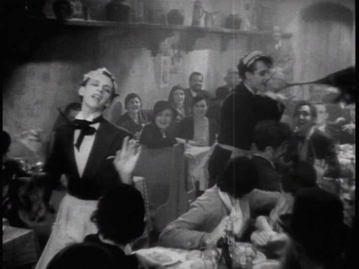

Sometimes things are just showing below the surface, especailly when there's a time when the explicit expression is prohibited and defined as profane behavior.
Yet where there is opression there is subversion and resistance.
ACTION 1:
To become just a mere source of laughter in order to become visible.

ACTION 2: Object Relation
Sometimes they shapeshift, only do they exist as non-human form can express their love to each other.